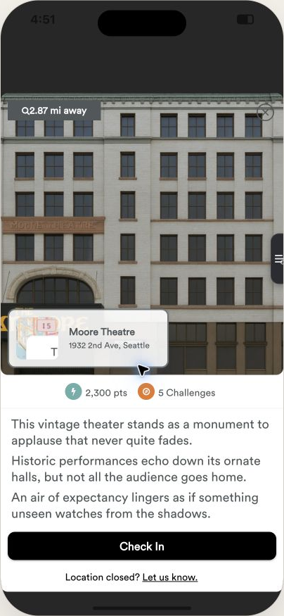

Main Hunt Screen Redesign
The purpose of this redesign is to improve completion rate and customer satisfaction rate for Let's Roam tours.
The Main Hunt Screen and its associated user workflow is the core of the app and is the most important to completion rate and customer satisfaction.
My design philosophy usually centers around Clarity. A visual interface that helps the user immediately understand "What do I do on this screen?" is good UI.
With Clarity in mind I approached the Main Hunt Screen redesign, using things like color, size, location, omission and other elements to focus the user on their next task: big orange buttons, very clear language, and all secondary info should be subservient to the main goals visually.
I also adjusted the user workflow, so it is one smooth forward navigation, rather than a hub-and-spoke model.

The Redesigned Main Hunt Screen
Part one
What The Main Hunt Screen Needs To Communicate
Where do we go next?
The name of the next stop, a picture of it, its address, an estimated walk time, walking directions and a map.
What do we do when we get there?
The next action, whether it be checking in, enjoying the challenges or identifying the next location, should be clear and easy to understand.
Are we on track?
Reassurance that the users are on track and following the tour correctly. Users are less likely to give up when they feel they are doing it correctly.
Part two
Design Philosophy
Clarity First
A group standing on a pavement should know what to do in one glance. Points, the gamification and extras matter, but they must be secondary to clarity of the core flow.
One Next Action
Every state of the screen has exactly one primary button: Directions, Check in, Submit, Next stop.
Use Words
Labels beat colour codes and icons alone. Plain English beats jargon.
Checking-In Is A Big Win
Arriving is a core accomplishment for Let's Roamers, so the check-in itself gets the celebration: the button pops, confetti, the points land, and "Next stop" appears right there.
Part three
Current Screen vs Redesign
Starting The Tour

What changed
- One Main Button"Check In & Start Tour" takes the user by the hand and says: do this. A single action, in the brand orange, with nothing else on the screen competing for it.
- Tour And Team Names At The TopKeeping the overall task in focus.
- No Loss StateUsers can skip a stop, unskip it, revisit a completed one and retry any challenge. Nothing is irreversible, so there is no frustration or sense of failure, and they are free to explore the app.
After Checking In


What changed
- Screen Transforms Into Checked In StateCheck in button animates and indicates success, and the next stop appears, keeping you focused on moving forward.
- Optional Challenges Are Visually Below The Mandatory Next StepVisual hierarchy, so the user is clear what's really critical.
- Increased Use Of Clarifying LanguagePlain English everywhere, in small cues the user reads without noticing: "Completed Stop 3 of 5", "3 optional challenges below", "6 min walk", "Trivia", "Photo", "Fill in", "Check in turns on when you are within 50 m". Every state of the screen says what it is and what comes next, so it is very hard to be confused.
En Route


What changed
- One Flow, Not A Hub And SpokesThe current app is a hub: a list of locations, and a pop-up sheet for whichever one you tap. The redesign is a single flow of screens, each with one big action that pulls you through to the next: check in, next stop, directions, check in. The next stop is simply the next screen.
- Directions, Then Check InTwo buttons in the order you need them. Check in unlocks on arrival and says so in words.
- Something Preventing Check-In?Eliminate frustrating dead ends with an option to skip (can also be unskipped).
Want to see my iterative process on this page? The earlier version is still up: v2. Measurement plan and next steps are in the written review.